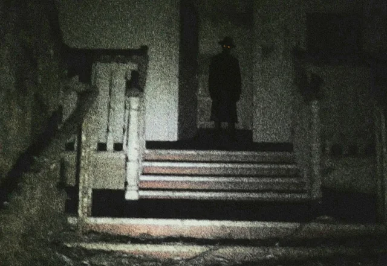

Ubicación: San Francisco, California, Estados Unidos.
Descripción del Avistamiento:
El Hatman es una figura que aparece en los relatos de parálisis del sueño, pero su naturaleza va más allá de lo que un simple sueño puede ofrecer. Se describe como una figura alta y delgada, siempre usando un sombrero de ala ancha. Los avistamientos del Hatman han sido reportados en varios lugares, pero es en San Francisco donde ha dejado una huella más profunda en la comunidad. Los testigos lo describen como una sombra negra, que se encuentra al pie de sus camas mientras están paralizados, observándolos fijamente con una presencia ominosa.
El Hatman se ha vinculado con fenómenos extraños como fallas tecnológicas, ruidos inexplicables y sensación de una presencia maligna. Aunque algunos investigadores creen que podría ser un producto del miedo colectivo, otros sostienen que es una entidad de otra dimensión, que se alimenta del terror humano.
Informe del Testigo:
"Desperté en medio de la noche, pero no podía moverme. Sentí una presión en mi pecho y vi su silueta al pie de mi cama. No podía ver su rostro, solo el sombrero. El terror me invadió como nunca antes."
Hipótesis y Teorías:
Algunos consideran que el Hatman es una manifestación de las pesadillas colectivas, mientras que otros sugieren que es un ser proveniente de un plano alternativo, un espectro que se alimenta de las energías negativas de los humanos. Su aparición siempre está marcada por una sensación de horror profundo, y se dice que sus víctimas no lo olvidan nunca.
Enlace a los Archivos X:
La presencia del Hatman sigue siendo un misterio, y la evidencia en torno a él se limita a testimonios personales, pero su figura continúa siendo un símbolo de lo desconocido y lo aterrador.